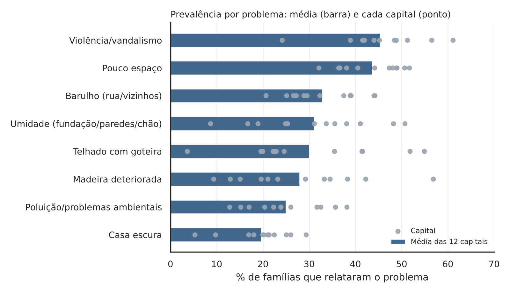
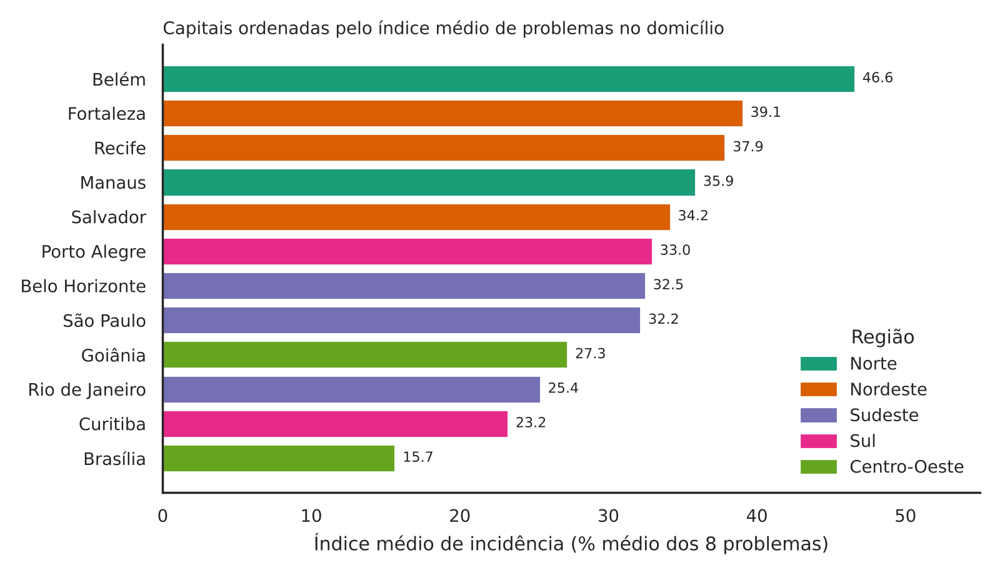
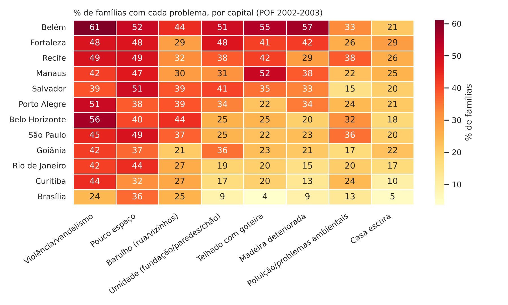
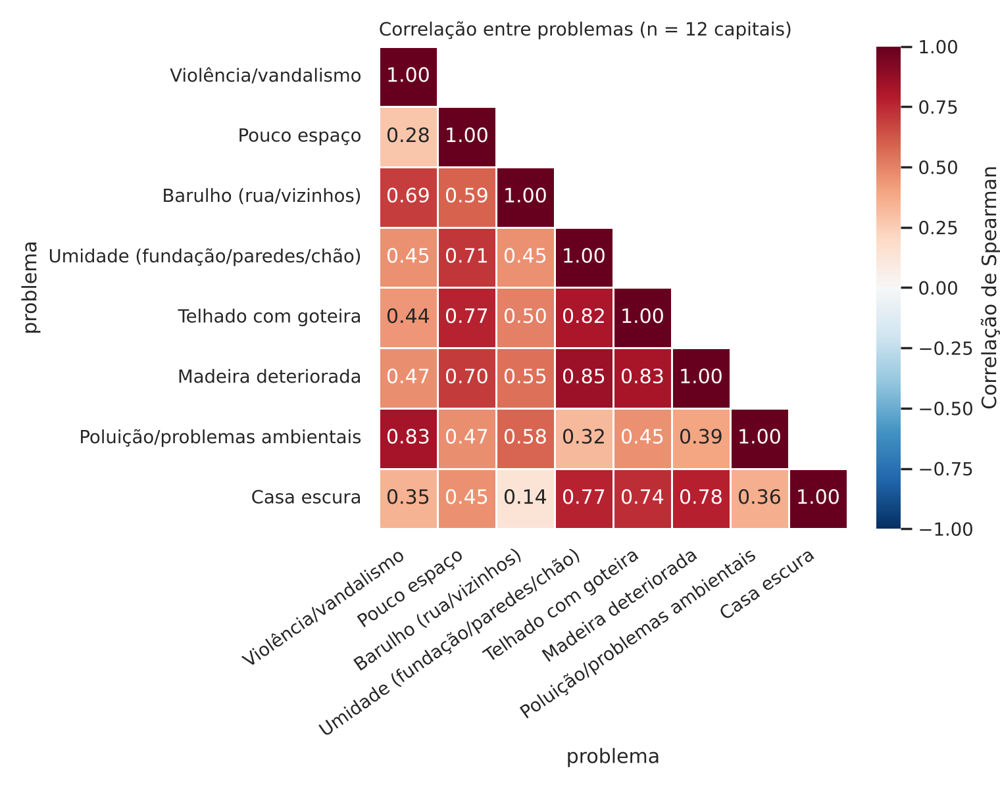
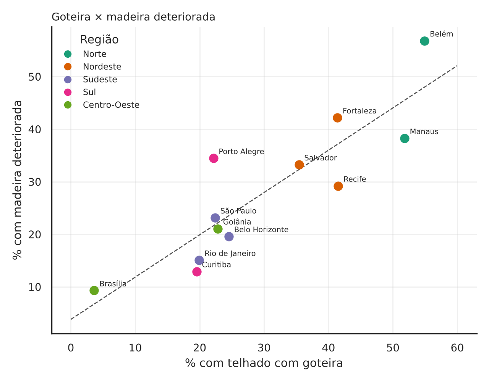

Onde a moradia é mais precária? Problemas no domicílio nas 12 maiores capitais brasileiras (POF 2002-2003)
Bacharelado em Sistemas de Informação — Centro Universitário La Salle do Rio de Janeiro
Disciplina: Linguagens de Programação – Análise e Visualização de Dados com Python (6º Período) · 2026.2
Professor: Prof. Alexandre Neves Louzada
📦 Ver Repositório GitHub (Código e Dados)Resumo
Este trabalho analisa a Tabela 1461 da Pesquisa de Orçamentos Familiares 2002-2003 (IBGE), que informa o percentual de famílias que relataram oito problemas no domicílio em doze grandes capitais brasileiras. Construímos um pipeline em Python que converte a planilha original, com cabeçalho em duas linhas, em formato tidy validado e persistido em CSV comprimido, seguido de estatística descritiva, índices agregados e correlações. Os problemas mais frequentes foram violência ou vandalismo (média de 45,3%) e pouco espaço (43,6%), enquanto os problemas estruturais (goteira, umidade e madeira deteriorada) apresentaram a maior dispersão entre as capitais. Belém obteve o maior índice médio de incidência (46,6%) e Brasília o menor (15,7%); as capitais do Norte e do Nordeste tiveram média de 38,7%, contra 27,0% nas demais. Os três problemas estruturais se correlacionam fortemente (ρ de Spearman entre 0,82 e 0,85), o que sugere um padrão comum de precariedade construtiva. Por se tratar de dados agregados, autodeclarados e com apenas 12 unidades de análise, as conclusões são exploratórias. O repositório segue os princípios FAIR e permite reproduzir integralmente as análises.
Palavras-chave: condições de moradia; POF 2002-2003; capitais brasileiras; análise exploratória de dados; ciência aberta.
1 Introdução
As condições físicas e ambientais do domicílio afetam saúde, segurança e qualidade de vida. Telhados com goteira e paredes úmidas, por exemplo, favorecem mofo e doenças respiratórias; barulho e violência no entorno afetam o bem-estar e o uso do espaço urbano. A POF investiga, além do orçamento das famílias, a percepção de problemas na moradia, o que permite comparar a precariedade habitacional entre cidades. Embora os dados tenham mais de vinte anos, eles formam um retrato de referência que pode servir como linha de base e como exercício reprodutível de análise de dados abertos.
Este estudo busca responder às seguintes perguntas de pesquisa:
2 Metodologia e Pipeline de Dados
2.1 Fonte e granularidade
A fonte primária é a Tabela 1461 da POF 2002-2003 (IBGE), adaptada pelo Instituto Municipal de Urbanismo Pereira Passos (IPP) em fevereiro de 2005 e disponibilizada no Armazém de Dados da Prefeitura do Rio de Janeiro (data.rio). A informação é agregada: para cada uma das 12 capitais, o percentual de famílias que responderam "sim" ou "não" a cada um de 8 problemas. Cada família foi representada por um único informante. A tabela não traz microdados, tamanhos de amostra nem intervalos de confiança.
2.2 Tratamento dos dados
- Parsing não trivial: o arquivo
.xls(Excel 97-2003, página de código 1252) tem título, cabeçalho em duas linhas (problema na linha superior, Sim/Não na inferior, com células mescladas) e notas de rodapé duplicadas. A leitura usaheader=Nonee localiza as linhas-âncora pelo conteúdo, e não por posição fixa, o que torna o código robusto a linhas em branco extras. - Reestruturação: o formato largo é convertido em tidy (uma linha por capital × problema), com colunas
pct_simepct_nao. - Valores ausentes: nenhum foi encontrado; mesmo assim, a validação interrompe o pipeline se surgirem, em vez de imputar valores silenciosamente.
- Tipos: percentuais convertidos para
float64compd.to_numeric(errors="coerce"); rótulos longos mapeados para identificadores snake_case. - Métricas derivadas: região da capital (macrorregião IBGE), ranking por problema, índice médio de incidência (média simples dos 8 percentuais), índice estrutural (média de goteira, umidade e madeira deteriorada), coeficiente de variação (CV) e z-score.
- Rastreabilidade: o arquivo bruto nunca é modificado; toda saída é gerada por
src/etl.pyemdata/processed/.
2.3 Trechos do pipeline
# Localiza o bloco de dados pelo conteúdo, e não pela posição
row_prob = raw.index[raw.eq("Pouco espaço").any(axis=1)][0]
row_sn = raw.index[(raw.index > row_prob) & raw.eq("Sim").any(axis=1)][0]
problemas = raw.loc[row_prob].ffill() # propaga o nome do problema para a coluna "Não"
# Pivot Sim/Não -> colunas pct_sim / pct_nao
tidy = (longo.pivot_table(index=["capital", "problema_original"],
columns="resposta", values="percentual", aggfunc="first")
.rename(columns={"Sim": "pct_sim", "Não": "pct_nao"}).reset_index())# Regras de qualidade (falham de forma explícita)
if df["capital"].nunique() != 12: erros.append("esperadas 12 capitais")
if df[["pct_sim", "pct_nao"]].isna().any().any(): erros.append("há valores ausentes")
if not np.allclose(df["pct_sim"] + df["pct_nao"], 100, atol=0.05):
erros.append("Sim + Não difere de 100%")
if erros: raise ValueError("Validação falhou: " + "; ".join(erros))Como as respostas são binárias, pct_nao = 100 − pct_sim em todas as 96 linhas, e as análises usam apenas pct_sim. A correlação principal é a de Spearman, mais adequada a amostras pequenas e a distribuições não necessariamente normais; o coeficiente de Pearson é indicado quando usado.
3 Resultados e Discussão Visual
3.1 RQ1 — Quais problemas são mais frequentes?
Violência ou vandalismo na área de residência (média de 45,3%) e pouco espaço (43,6%) foram os problemas mais relatados, seguidos de barulho (32,8%), umidade (31,1%) e goteira (30,0%). Casa escura foi o menos frequente (19,6%).

A dispersão difere muito entre os problemas. Pouco espaço (CV = 0,15) e violência (CV = 0,21) são relatados em níveis parecidos em quase todas as capitais, o que sugere problemas de natureza mais generalizada nas grandes cidades. Já goteira (CV = 0,50), madeira deteriorada (0,49) e umidade (0,41) variam muito: a goteira vai de 3,6% em Brasília a 54,9% em Belém, e a madeira deteriorada de 9,3% (Brasília) a 56,8% (Belém). Esses problemas dependem de qualidade construtiva, materiais e clima, fatores que mudam de uma cidade para outra.
3.2 RQ2 — Quais capitais concentram mais problemas?

Belém lidera com índice de 46,6%, seguida de Fortaleza (39,1%), Recife (37,9%), Manaus (35,9%) e Salvador (34,2%): as cinco capitais do Norte e do Nordeste ocupam as cinco primeiras posições. Brasília (15,7%), Curitiba (23,3%) e Rio de Janeiro (25,4%) têm os menores índices. Por região, a média dos índices é de 41,2% no Norte, 37,0% no Nordeste, 30,0% no Sudeste, 28,1% no Sul e 21,5% no Centro-Oeste. Reunindo Norte e Nordeste, a média é de 38,7%, contra 27,0% nas demais regiões.
Considerando só o índice estrutural, a distância aumenta: Belém tem 54,1% e Brasília 7,2%, cerca de 7,5 vezes menos. Uma hipótese plausível, não testada aqui, é que o planejamento e a idade do parque habitacional de Brasília, junto com o clima mais seco, reduzam goteiras e umidade, enquanto em Belém o clima quente e muito chuvoso, somado a uma proporção maior de moradias precárias, favoreça esses problemas. Para verificá-la seriam necessários dados de renda, material de construção e pluviosidade.

Explore os dados. Escolha um problema para ver as capitais ordenadas; passe o mouse (ou toque) nas barras para ver os detalhes.
Há três valores extremos (|z| ≥ 1,8 em relação à média do problema): Belém em madeira deteriorada (56,8%, z = 2,09) e Brasília em casa escura (5,3%, z = −2,14) e em violência (24,1%, z = −2,26). Os dois valores de Brasília estão no mesmo sentido, o que reforça seu perfil singular no conjunto.
3.3 RQ3 — Os problemas se associam?

Os três problemas estruturais formam um bloco coeso: goteira × madeira deteriorada (ρ = 0,83; p < 0,001), umidade × goteira (ρ = 0,82) e umidade × madeira deteriorada (ρ = 0,85). Ou seja, onde há mais telhados com goteira, há também mais umidade e madeira deteriorada, o que é coerente com um mecanismo comum de infiltração de água e deterioração dos materiais.

Em um segundo grupo, de natureza urbana, violência se associa a poluição (Pearson r = 0,73) e a barulho (r = 0,67), o que pode refletir o grau de adensamento e de intensidade de uso do espaço urbano. A relação entre pouco espaço e violência é fraca (r = 0,33), embora pouco espaço se associe a goteira (r = 0,74), possivelmente por atingir principalmente moradias precárias. Todas essas interpretações são hipóteses: com 12 unidades, os coeficientes são instáveis, e correlações entre agregados não valem necessariamente para as famílias (falácia ecológica).
4 Conclusão
RQ1: violência e pouco espaço são os problemas mais comuns e relativamente homogêneos entre as capitais; goteira, madeira deteriorada e umidade variam muito mais. RQ2: Belém, Fortaleza, Recife, Manaus e Salvador concentram a maior incidência, e Brasília a menor; a diferença entre Norte/Nordeste e as demais regiões é de cerca de 12 pontos percentuais no índice médio. RQ3: os problemas estruturais se correlacionam fortemente entre si, indicando um padrão comum de precariedade construtiva, enquanto violência, poluição e barulho formam um segundo grupo ligado ao ambiente urbano.
Limitações
- Dados de 2002-2003, que não refletem a situação atual.
- Informações autodeclaradas por um único membro da família, com respostas binárias e sem gradação de gravidade.
- Tabela agregada, sem tamanho de amostra nem erro amostral: não é possível testar se as diferenças entre capitais são estatisticamente significativas.
- Apenas 12 unidades de análise; o índice médio é uma média simples, sem pesos nem validação como medida composta.
- Análise ecológica, que não permite inferir relações no nível da família.
Trabalhos futuros
Cruzar a tabela com renda, tipo de material de construção e pluviosidade; usar os microdados da POF para estimar intervalos de confiança; e comparar com edições posteriores da pesquisa (2008-2009 e 2017-2018) para avaliar a evolução dos problemas.
5 Disponibilidade e Princípios FAIR
Este projeto adere aos princípios FAIR (WILKINSON et al., 2016):
- Findable:
README.mdcom resumo, palavras-chave e link para a fonte original; autoria, disciplina, semestre e instituição identificados. - Accessible: repositório público, sem credenciais proprietárias; artigo publicado via GitHub Pages, com layout responsivo.
- Interoperable: dados processados em
.csv.gz(UTF-8); variáveis descritas emdata/data_dictionary.md. - Reusable: código sob licença MIT; dados derivados e texto sob CC BY 4.0; dependências fixadas em
requirements.txt.
Para reproduzir todo o pipeline:
git clone https://github.com/alexairu/projeto-g2.git
cd projeto-g2
python -m venv .venv
source .venv/bin/activate # Windows: .venv\Scripts\activate
pip install -r requirements.txt
python -m src.etl # gera data/processed/*.csv.gz
python -m src.analise # gera docs/assets/*.png e estatisticas.json6 Referências
- HUNTER, J. D. Matplotlib: a 2D graphics environment. Computing in Science & Engineering, v. 9, n. 3, p. 90-95, 2007.
- INSTITUTO BRASILEIRO DE GEOGRAFIA E ESTATÍSTICA (IBGE). Pesquisa de Orçamentos Familiares 2002-2003. Rio de Janeiro: IBGE, Diretoria de Pesquisas, Coordenação de Índices de Preços, 2004.
- PLOTLY TECHNOLOGIES INC. Plotly.js. Disponível em: https://plotly.com/javascript/. Acesso em: 16 nov. 2026.
- PREFEITURA DA CIDADE DO RIO DE JANEIRO. Instituto Municipal de Urbanismo Pereira Passos (IPP). Tabela 1461 – Famílias, por existência de problemas no domicílio, segundo as 12 maiores capitais, 2002-2003 (%). Armazém de Dados / data.rio, 2005. Disponível em: https://www.data.rio/documents/21e108c3f4574658bd06759c6602b9e3/about. Acesso em: 16 nov. 2026.
- THE PANDAS DEVELOPMENT TEAM. pandas documentation. Disponível em: https://pandas.pydata.org/docs/. Acesso em: 16 nov. 2026.
- VIRTANEN, P. et al. SciPy 1.0: fundamental algorithms for scientific computing in Python. Nature Methods, v. 17, p. 261-272, 2020.
- WASKOM, M. L. seaborn: statistical data visualization. Journal of Open Source Software, v. 6, n. 60, 3021, 2021.
- WILKINSON, M. D. et al. The FAIR Guiding Principles for scientific data management and stewardship. Scientific Data, v. 3, 160018, 2016.